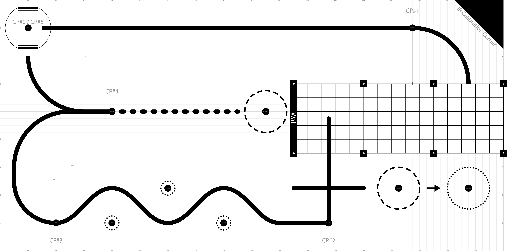

Romi Robot Project
This website documents the design and implementation of our Romi robot, whom we have lovingly named "Shrimpy".

Overview
In this project, we developed an autonomous Romi robot designed to navigate an obstacle course autonomously. The robot follows a track using line sensors while also monitoring bump sensors to detect obstacles encountered along the path. Wheel encoders provide motion feedback for controlled movement and accurate positioning, while an onboard IMU is used to track the robot’s orientation during turns and navigation. A structured state machine coordinates the robot’s behavior, enabling it to follow the course, respond to collisions, and perform recovery maneuvers when necessary.
The image below shows the course used for our design and testing. Our objective is for our Romi to navigate the track while crossing each checkpoint in the correct sequence, and displace the plastic cups outside of their designated circles.

Team Members
- Jesse Whitehead
- Isabel Vega
Contents
- Mechanical design
- Electrical design
- Software and control
- Results and testing
- Demo video